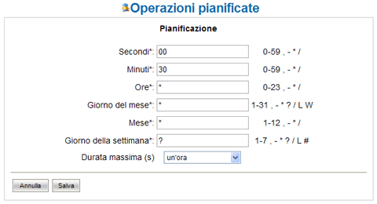

Operazioni Pianificate |
Nel programma esistono dei processi che vengono eseguiti durante la normale
operativa del programma anche senza l'intervento di un utente. Tali processi sono
detti operazioni pianificate perché è possibile pianificare la loro esecuzione.
La sezione Operazioni pianificate dell'amministrazione consente appunto di
monitorare e programmare l'esecuzione di questi processi.
Lista delle operazioni pianificate
Figura 55: Elenco delle operazioni pianificate
L'elenco delle operazioni pianificate mostra tutte le operazioni registrate nel sistema e per ognuna di esse visualizza:
-
Il nome dell'operazione
-
L'istante di ultima esecuzione
-
L'istante in cui tornerà ad essere eseguita
-
l'indicazione compatta della pianificazione(cliccabile per la modifica)
-
L'indicazione di abilitazione(cliccabile per la modifica)
-
L'indicazione dello stato di avanzamento
-
Il link per accedere al log specifico dell'operazione
Ogni operazione pianificata può essere abilitata o disabilitata, in modo che al di là della pianificazione, solo se abilitata l'operazione potrà essere effettivamente eseguita.
Pianificazione
Benché le operazioni pianificate possano anche essere lanciate a comando, come
suggerisce il nome, esse vengono generalmente eseguite sulla base di una
pianificazione temporale.
Cliccando sul link della colonna Pianificazione, è possibile programmare quando
eseguire l'operazione.

Figura 56: Maschera di pianificazione
La pianificazione dei Task avviene mediante la specifica di 6 campi (come per il comando cron di Unix) di seguito elencati:
| Nome campo | Valori ammessi | Caratteri speciali |
|---|---|---|
| Secondi | 0-59 | , - * / |
| Minuti | 0-59 | , - * / |
| Ore | 0-23 | , - * / |
| Giorno del mese | 1-31 | , - * ? / L W |
| Mese | 1-12 | , - * / |
| Giorno della settimana | 1-7 (1=domenica) | , - * ? / L # |
I caratteri speciali configurabili assumono il seguente significato. Il carattere '?' è
consentito nel giorno del mese e nel giorno della settimana. Viene usato per definire
nessuno specifico giorno.
Il carattere '*' si usa per specificare tutti i valori. Ad esempio '*' nel campo dei minuti
indica “ogni minuto”.
Il carattere ',' si usa per specificare valori addizionali. Per esempio 2,4,6 nel giorno
della settimana indica “i giorni di lunedì, mercoledì e venerdì”.
Il carattere '/' è usato per specificare incrementi. Per esempio '0/15' nel campo dei
secondi indica “i secondi 0, 15, 30 e 45” e “5/15” nello stesso campo indica “i
secondi 5, 20, 35 e 50”.
Il carattere 'L' è ammesso per il giorno del mese e il giorno della settimana. Questo
carattere ha un significato differente per i due campi. Nel campo del giorno del mese
indica l'ultimo giorno del mese(31 Gennaio, 28 Febbraio ...).
Se usato nel giorno della settimana, indica l'ultimo giorno xx del mese ad esempio “6L” indica “l'ultimo venerdì del mese”.
Il carattere 'W' è consentito per il giorno della settimana. Esso è usato per
specificare il giorno lavorativo della settimana più vicino(lunedì, venerdì) più vicino al
giorno specificato. Se ad esempio si specifica “15W” come giorno del mese si
intende “il giorno lavorativo più vicino al 15 del mese”. Così se il 15 è sabato, verrà
preso venerdì 15. Se invece il 15 è domenica, allora verrà preso lunedì 16. Se il 15 è
martedì, verrà preso martedì 15.
I caratteri 'L' e 'W' possono essere combinati nel campo del giorno del mese e
indicano l'ultimo giorno lavorativo del mese.
Il carattere '#' è consentito per il giorno della settimana. Tale carattere è usato per
specificare il “#esimo giorno del mese”. Per esempio il valore “6#3” indica il 3°
venerdì del mese.
Oltre ai parametri descrittivi della pianificazione, è possibile impostare la specifica
sulla durata massima dell'elaborazione. Qualora questa sia specificata, la procedura
verrà automaticamente interrotta trascorso il tempo impostato.
Stato di avanzamento e log
Quando un'operazione è in esecuzione, è possibile dedurlo da quanto mostrato
nella colonna Esecuzione. Se il processo è in esecuzione allora la barra di
progressione verrà aggiornata mostrando costantemente la percentuale di
avanzamento. Al fianco di questa barra un'icona animata segnala che il processo è
in esecuzione.
Questa icona è cliccabile e consente di interrompere l'esecuzione.
Quando invece l'operazione non sta eseguendo, la stessa icona appare immobile e
cliccandola si provoca il lancio dell'esecuzione.
Ogni operazione pianificata ha poi un file di log dedicato che può essere ispezionato
cliccando sul link presente nella colonna Log. Leggendo questo log è possibile
capire nel dettaglio come procede l'esecuzione.
| Non tutte le operazioni pianificate sono in grado di fornire lo stato di avanzamento dell'elaborazione. In questi casi la barra di progressione non indicherà la percentuale di avanzamento e rimarrà indeterminata. | |